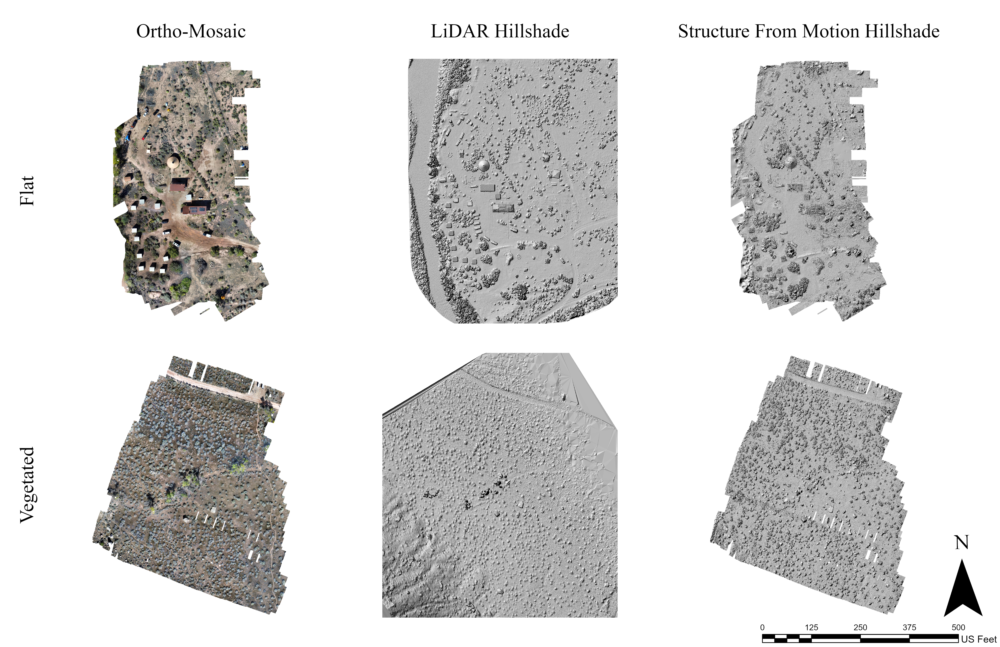
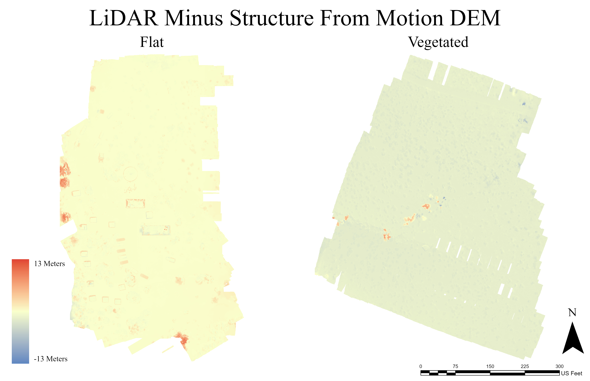
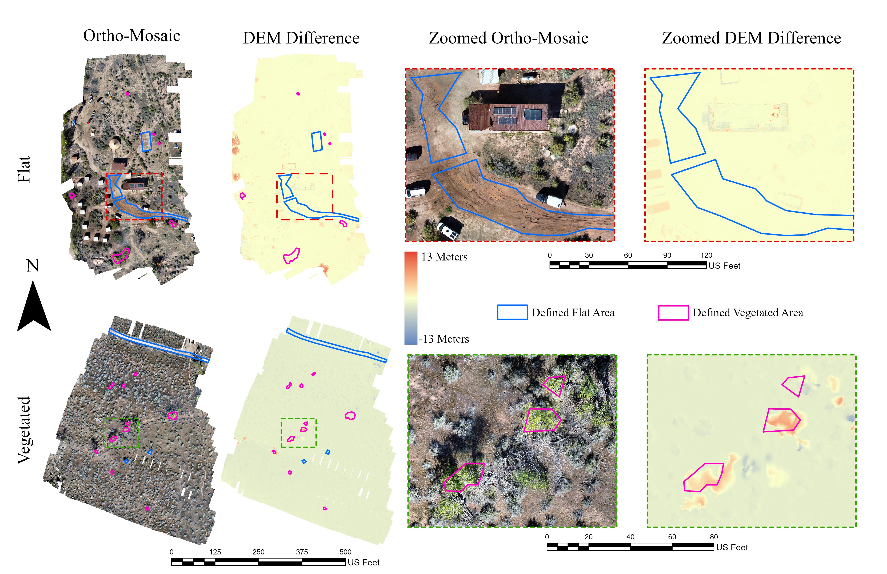
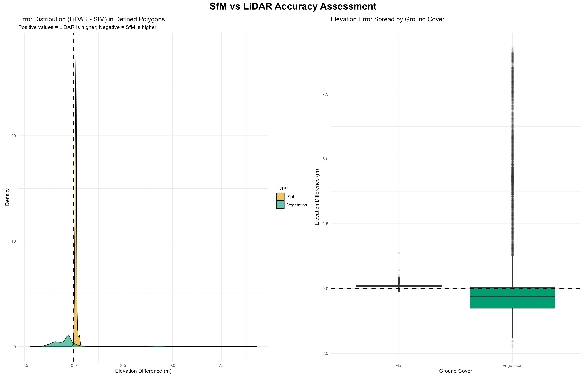

Comparison of Structure from Motion Accuracy in Vegetated vs. Non-Vegetated Areas
Skills & Concepts Demonstrated
- Understand how to manipulate and process spatial data: Processed raw point clouds, performed precise DEM differencing, and managed high-resolution raster datasets to quantify elevation error.
- Process remotely sensed imagery to address environmental questions: Contrasted active (LiDAR) and passive (Structure from Motion) remote sensing limitations by flying DJI drones, collecting Ground Control Points (GCPs) via RTK, and deriving 3D models.
Programs Used & Data Sources
- Programs Used: Agisoft Metashape (for SfM processing), ArcGIS Pro (for LiDAR LAS to Raster conversion and DEM differencing), and R/RStudio (for precision and error distribution analysis).
- Data Sources: High-resolution optical imagery (via DJI Mini), LiDAR point clouds (via RTK drone), and RTK-collected GCPs.
Project Summary
Reliable Digital Elevation Model (DEM) generation is essential for modern earth science research. Currently, the two leading methods for deriving these models are Light Detection and Ranging (LiDAR) and Structure from Motion (SfM) photogrammetry. While SfM is significantly cheaper and more accessible, relying only on a standard optical camera, it is physically limited to capturing surface objects (generating a Digital Surface Model) and struggles to penetrate vegetation. Conversely, LiDAR emits active light pulses that penetrate through gaps in the canopy to reach the bare earth beneath, creating highly accurate Digital Terrain Models (DTMs).
This project quantified the limitations of SfM by comparing it against LiDAR "ground truth" across both flat and vegetated terrains near the Bonderman Rio Mesa Field Station. Drone flights were executed, Ground Control Points (GCPs) were established using RTK receivers, and highly detailed DEMs were generated from both methods. By performing DEM differencing, the analysis proved that while SfM is highly precise and consistent over flat surfaces, its accuracy deteriorates significantly in vegetated areas, demonstrating extreme outliers and a consistent elevation discrepancy of nearly -1.86 meters.
Key Figures & Analysis



